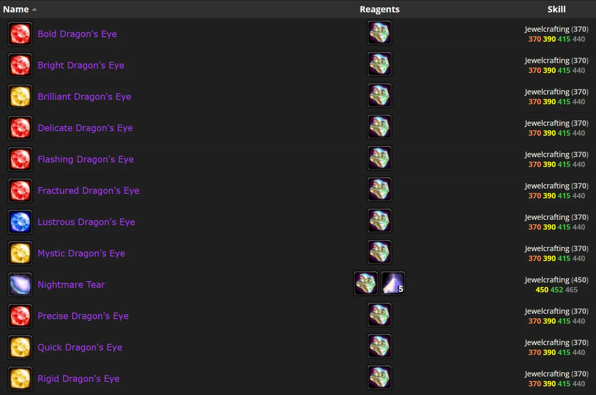
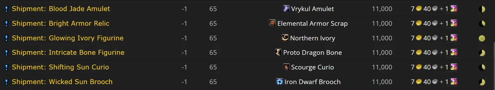
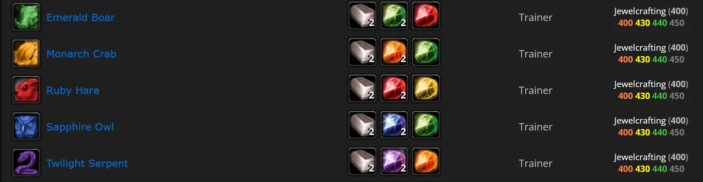
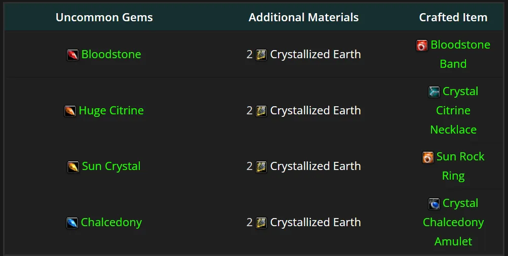
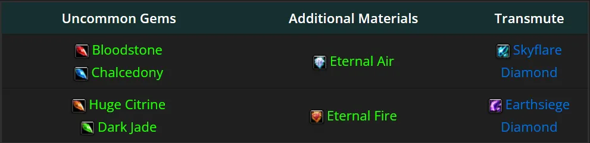
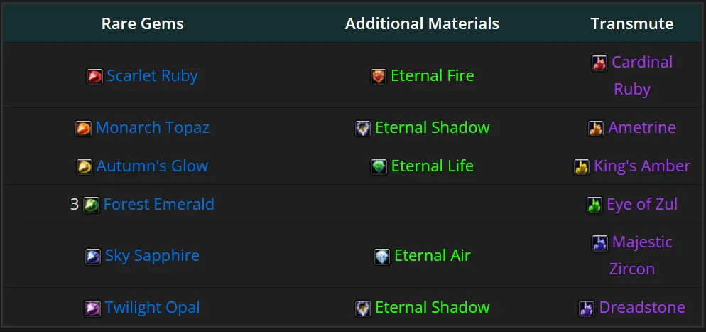

WotLK Warmane Icecrown - Jewelcrafting 1 to 450 (x3) and Bonuses
Dragon's Eye gems, daily tokens, trinkets, leveling route and the Saronite shuffle.
Jewelcrafting Bonuses
Jewelcrafting offers one of the strongest and most flexible
profession bonuses in Wrath of the Lich King.
The main perk comes from Jewelcrafter-only gems, which
give higher stats than regular gems.
1. Jewelcrafter-Only Gems (Dragon’s Eye Gems)
As a Jewelcrafter, you can use up to three special
gems called Dragon’s Eyes.
These gems provide significantly stronger stats than
standard rare gems, giving you a major stat boost.
For example:
-
Runed Dragon’s Eye gives +39 Spell Power
compared to a normal +23 Spell Power gem. -
Bold Dragon’s Eye gives +34 Strength
compared to +20 Strength. -
Delicate Dragon’s Eye gives +34 Agility
compared to +20 Agility. -
Rigid Dragon’s Eye gives +34 Hit Rating
compared to +20 Hit Rating.
And so on.

Since you can use three of these, the total bonus you gain compared to regular gems is roughly:
-
+48 Spell Power, or
-
+84 Attack Power, or
-
+42 Strength, or
-
+42 Agility, or
-
+42 Stamina, depending on your build.
These numbers put Jewelcrafting on par with the very best professions in WotLK.
2. Daily Quests & Tokens
To buy Dragon’s Eye gems and exclusive recipes, you’ll complete
Jewelcrafting daily quests.
These give Dalaran Jewelcrafter’s Tokens, which you use
to purchase:
-
JC-only gem cuts
-
Dragon’s Eyes
-
Trinket recipes
-
Meta gem patterns

This creates a stable gold source, since cuts and Dragon’s Eyes always stay in demand.
3. Special Trinkets
Jewelcrafters can craft powerful pre-raid trinkets such as:
-
Figurine – Sapphire Owl (healer/caster)
-
Figurine – Monarch Crab (tanks)
-
Figurine – Emerald Boar (melee DPS)

These are extremely useful early in the expansion and often last into Naxxramas.
4. Additional Goldmaking
Jewelcrafting is one of the best goldmaking professions in WotLK thanks to:
-
Prospecting Saronite Ore and Titanium Ore
-
Cutting high-demand gems
-
Selling Dragon’s Eyes
-
Meta gems
-
Icy Prisms (Daily cooldown profitable item)
A Jewelcrafter can make gold every single day, making it both a performance and economic powerhouse.
Leveling Jewelcrafting from 1 to 450
Material Cost
Material cost should be around 2000 - 3000 gold depending on the market (calculated in 01/05/2025 (dd/MM/yyyy)
Required Materials
SOME CRAFTS ARE YELLOW OR GREEN.
YOU MIGHT NEED MORE MATERIALS THAN LISTED HERE.
Classic
| Stones | Bars | Gems |
|---|---|---|
50 Solid Stone 20 Flask of Mojo 2 Heart of the Wild 4 Essence of Undeath |
52 Copper Bar 126 Bronze Bar 8 Golden Bar 26 Mithril Bar 26 Truesilver Bar 18 Thorium Bar |
3 Lesser Moonstone 42 Shadowgem 2 Jade 7 Citrine 15 Aquamarine 6 Large Opal 4 Blue Sapphire 6 Huge Emerald |
| TSM Shopping Strings | ||
Solid Stone/exact/x50 Flask of Mojo/exact/x20 Heart of the Wild/exact/x2 Essence of Undeath/exact/x4 |
Copper Bar/exact/x52 Bronze Bar/exact/x84 Golden Bar/exact/x8 Mithril Bar/exact/x26 Truesilver Bar/exact/x26 Thorium Bar/exact/x18 |
Lesser Moonstone/exact/x3 Shadowgem/exact/x42 Jade/exact/x2 Citrine/exact/x7 Aquamarine/exact/x15 Large Opal/exact/x6 Blue Sapphire/exact/x4 Huge Emerald/exact/x6 |
TBC
| Gems |
|---|
12 Deep Peridot 8 Flame Spessarite 2 Shadow Draenite |
| TSM Shopping Strings |
Deep Peridot/exact/x12 Flame Spessarite/exact/x8 Shadow Draenite/exact/x2 |
WotLK
| Gems | Misc |
|---|---|
25 Shadow Crystal 13 Forest Emerald 8 Chalcedony 8 Dark Jade |
8 Frozen Orb |
| TSM Shopping Strings | |
Shadow Crystal/exact/x25 Forest Emerald/exact/x13 Chalcedony/exact/x8 Dark Jade/exact/x8 |
Frozen Orb/exact/x8 |
Jewelcrafting Trainer
For Jewelcrafting, you need to visit 2 different trainers throughout your leveling.
-
for Classic and TBC :
Alliance : Exodar - Farii
Horde : Silvermoon - Kalinda
-
For Wrath of the Lich King
Neutral: Dalaran - Timothy Jones
Leveling 1 to 450
Classic
| Level | Craft | Quantity | Total Material |
|---|---|---|---|
| Learn Apprentice Jewelcrafting at 1 | |||
| 1-52 | Delicate Copper Wire | 26 | 52 Copper Bar |
Alternative: 1-52 |
Rough Stone Statue | 24 | 192 Rough Stone |
| Learn Journeyman Jewelcrafting at 50 | |||
| 52-91 | Bronze Setting | 29 | 58 Bronze Bar |
Alternative: 52-91 |
Coarse Stone Statue | 28 | 224 Coarse Stone |
| 91-97 | Solid Bronze Ring | 5 | 20 Bronze Bar |
| 97-100 | Bronze Torc | 1 | 6 Bronze Bar, Bronze Setting, Lesser Moonstone |
| 100-145 | Ring of Twilight Shadows | 21 | 42 Shadowgem, 42 Bronze Bar |
| Learn Expert Jewelcrafting at 125 | |||
| 145-151 | Golden Ring of Power | 2 | 8 Golden Bar, 2 Lesser Moonstone, 2 Jade, 2 Citrine |
| 151-176 | Mithril Filigree | 8 | 16 Mithril Bar |
| 176-187 | Solid Stone Statue | 5 | 50 Solid Stone |
| 187-202 | Citrine Ring of Rapid Healing | 5 | 5 Citrine, 10 Mithril Bar |
| Learn Artisan Jewelcrafting at 200 | |||
| 202-211 | Amulet of Truesight | 3 | 24 Truesilver Bar |
| 211-226 | Aquamarine Signet | 5 | 15 Aquamarine, 20 Flask of Mojo |
| 226-256 | Thorium Setting | 18 | 18 Thorium Bar |
| 256-262 | Truesilver Healing Ring | 2 | 2 Truesilver Bar, 2 Heart of the Wild |
| 262-280 | Simple Opal Ring | 6 | 6 Large Opal, 6 Thorium Setting |
| Learn Master Jewelcrafting at 275 | |||
| 280-292 | Sapphire Pendant of Winter Night | 4 | 4 Blue Sapphire, 4 Essence of Undeath, 4 Thorium Setting |
| 292-301 | Emerald Lion RIng | 3 | 6 Huge Emerald, 3 Thorium Setting |
TBC
| 301-322* | Radiant Deep Peridot | 9 | 9 Deep Peridot |
|---|---|---|---|
| 322-325* | Jagged Deep Peridot | 1 | Deep Peridot |
| 325-337* | Glinting Flame Spessarite | 4 | 4 Flame Spessarite |
| 337-340* | Sovereign Shadow Draenite | 2 | 2 Shadow Draenite |
| 340-346* | Jagged Deep Peridot | 7 | 2 Deep Peridot |
| 346-352* | Glinting Flame Spessarite | 4 | 4 Flame Spessarite |
WotLK
| Learn Grand Jewelcrafting at 350 | |||
|---|---|---|---|
| 352-397 | Any Gem crafted from Shadow Crystal | 17 | 17 Shadow Crystal |
| Alternative: 352-400 | Bloodstone Band / Crystal Chalcedony Amulet / Sun Rock Ring / Crystal Citrine Necklace (if you have disenchanting) |
18 | 36 Crystallized Earth, 18 Bloodstone or Chalcedony or Huge Citrine or Sun Crystal |
| 397-427 | Any Gem crafted from Forest Emerald | 13 | 13 Forest Emerald |
| Alternative: 397-421 | Stoneguard Band (if you have disenchanting) | 11 | 22 Eternal Earth |
| 427-450 | Icy Prism (can be crafted every 20 hours in real life) | 8 | 8 Frozen Orb, 8 Chalcedony, 8 Shadow Crystal, 8 Dark Jade |
| Alternative: 427-450 | Any Meta-gem crafted from Earthsiege/Skyflare Diamond | 9 | 9 Earthsiege/Skyflare Diamond |
Make Gold
Saronite Shuffle
Requirement
-
Enchanting 375+
-
Jewelcrafting 375+
TSM Groups
Jewelcrafting Structure
-
Crafts
-
Materials
-
Saronite Shuffle
Make Gold



Red- Spell power, armor pen, str, agi, atp probably in that order
Blue - stamina, spirit, mp5 in that order
Yellow- haste, hit, crit in that order
Orange- haste/sp crit/sp hit/sp in that order
Purple - sp/spirit sp/mp5 in order
Green - why use a green gem lol
Sources
https://www.wowhead.com/wotlk/guide/saronite-shuffle-gold-making